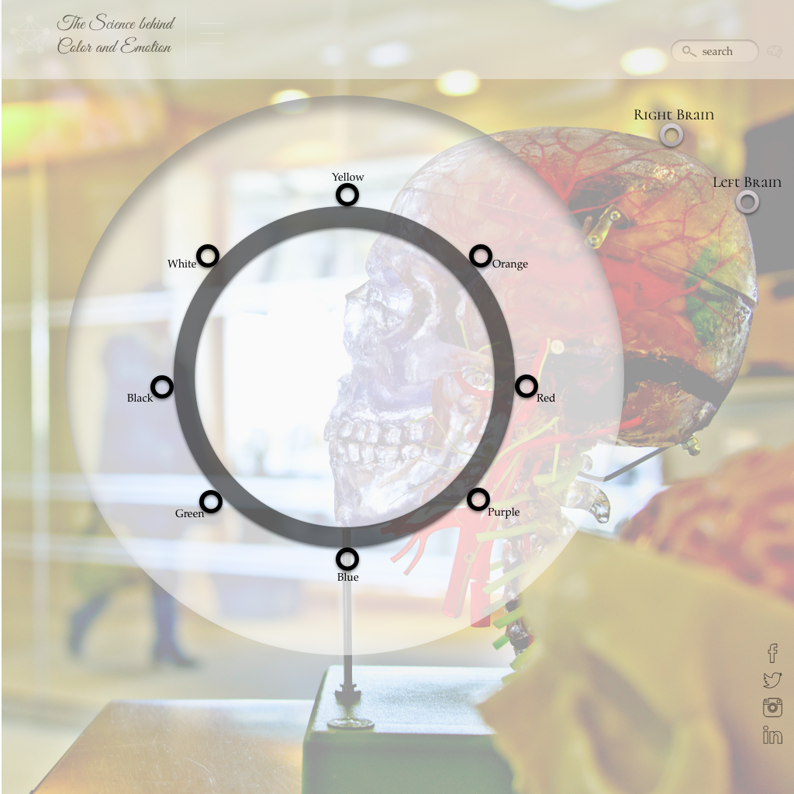
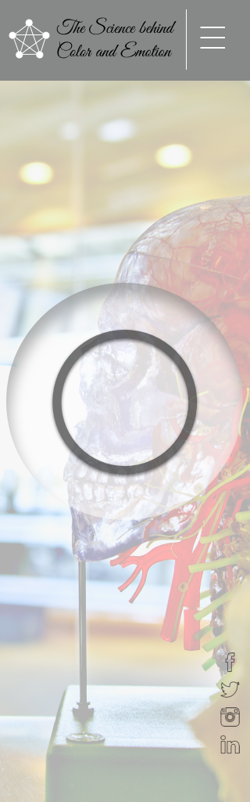
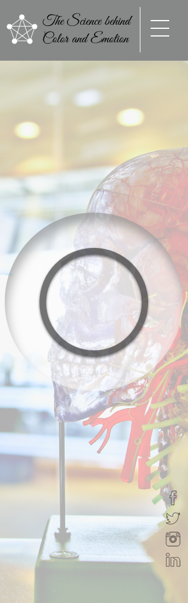
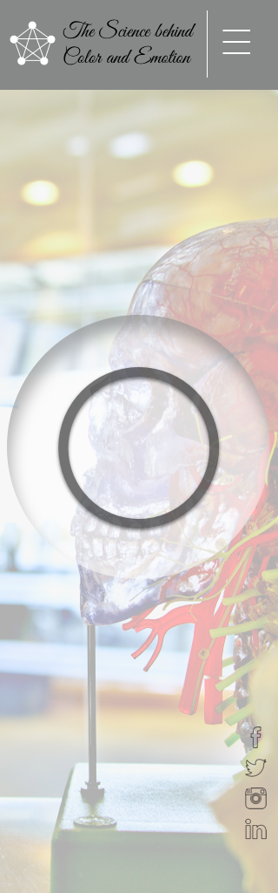

Week 2
 


Background | The audience starts on a landing page. This page displays a navigational wheel that includes eight colors including: yellow, orange, red, purple, blue, green, black, and white.
After a color is chosen, it will transition to a new page where it will define the color in detail. Explaining it's qualities, traits, personality, and connection to human emotions.
The landing page also includes links to "Right Brain" and "Left Brain" that also transitions to another page explaining the different characteristics of each side of the brain.
Artistic or logical, humans need balance on both sides to have a healthy brain.
The Problem | The focal point of this webpage is to inform the audience about the different characteristics between each color and how we can use it in our daily lives to benefit ourselves and others.
Goals and Objectives | As a front-end designer, I am trying to capture the audience with my aesthetic design so I can redirect their attention to why colors are so important. I want the audience to see the beauty in color and how we can use it in our advantage as artists, designers, architects, or decorators. The options are endless when working with colors.
